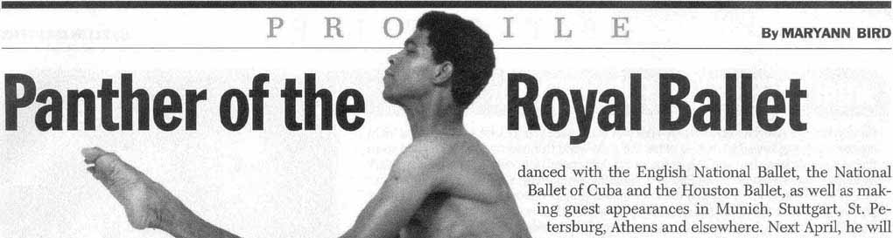
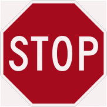
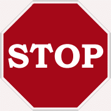
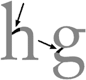
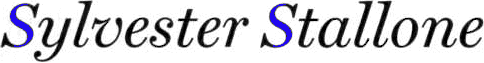
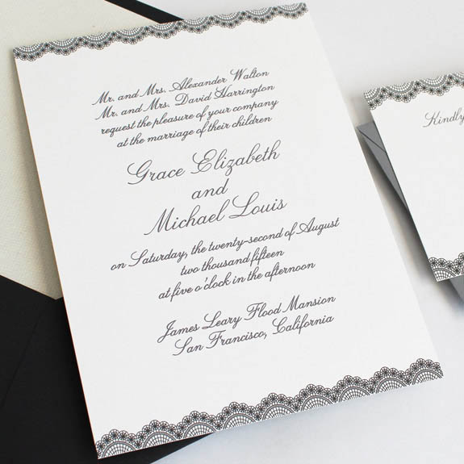
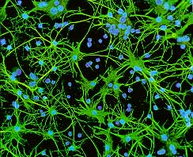
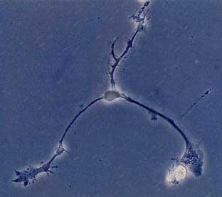
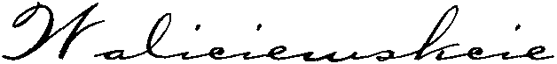
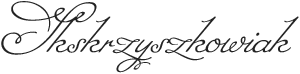

The actual character recognition extracts characteristics out of each isolated shape and assigns a symbol.
I already described how the state-of-the-art neural networks and word recognition engines operate. I also made it sound much easier than it actually is. Why?
Just think of the many thousand different typefaces that are installed on computers, used frequently in books, magazines, newspapers, you name it… A recent book on typography stated that there no less than 56,000 different Latin-script fonts in circulation, other estimates speak of over 60,000 Latin typefaces!
Study for instance the uppercase letter “S” in the illustration below — we printed the same point size and the normal typestyle of the most common Windows typefaces. Unavoidable conclusion: although no exotic font is presented here, each single “S” shape is distinctly different!
S S S S S S S S S S S S
We already explained the difference between proportional and fixed fonts. An equally significant classification of fonts is based on the distinction between “serif” and “sans serif” fonts. Serif fonts have extra, “non-structural” strokes at the extremities (usually perpendicular to the strokes), sans serif fonts don’t have these ornaments.
(“Sans” means “without” in French. The origin of the word “serif” is unknown. Some trace it back to the Dutch word “schreef”, meaning “wrote”. The Dutch verb “schrijven” means “to write” — equal to “schreiben” in German, “scribere” in Latin etc.)
You may think that these ornaments make a typeface more complex and hence more difficult to read, but the contrary is true: serif guides the eye along a text line. The human eye “moves” from one character to the next spontaneously. (Neurologists have calculated that it takes about 10 to 20 ms. to read a letter.) Serif increases the difference between the various symbols, the letters are more distinct. Virtually all body text is printed in serif fonts, otherwise you wouldn’t read to the end! Imagine having to read this lengthy web page in Orbitron. Or in Bubbler One. How quickly would you give it up?
Which reminds us of a similar psychological phenomenon: the difference in legibility of uppercase and lowercase characters. Uppercase characters look too much alike to be easily readable for the human mind — and adding serif doesn’t help much in this case… Lowercase shapes simply are more distinctive: there’s more saliency with the ascenders and descenders and other projecting features. By comparison, capital letters are uniform in height and show little variation.
See for yourselves: which of the two paragraphs below do you prefer to read?
MICHAEL HERR SAYS THAT ALL WARS ARE THE SAME. BUT THIS ONE, FOR KUBRICK, HAS SPAWNED A SEMANTIC EVASIVENESS TANTAMOUNT TO PARANOIA. AT A MORNING BRIEFING IN THE INFORMATION HQ, THE AGENDA HAS TO DO WITH WORDS AND THEIR MEANINGS IN THE COMBAT ZONE. THE ANODYNE PHRASE “SWEEP AND CLEAR” IS ORDERED TO BECOME A REPLACEMENT FOR THE PEJORATIVE “SEARCH AND DESTROY”; A FINE (AND SELF-SERVING) DISTINCTION IS MADE BETWEEN “REFUGEES” AND “EVACUEES.” A MORALE-BOOSTING VISIT BY ANN-MARGRET IS IMMINENT; BUT THE BRIEFING OFFICER KNOWS WHAT REALLY RAISES THE GUYS’ SPIRITS: “GRUNTS LIKE READING ABOUT DEAD OFFICERS.” “HOW ABOUT A GENERAL?” JOKER VOLUNTEERS. SUCH FLIPPANCY IS IN SHOCKING CONTRAST TO THE BARRACK-ROOM BAWDINESS OF THE PARRIS ISLAND PROLOGUE. A SUDDEN VIETCONG ATTACK HERALDS THE TET OFFENSIVE’S ONSET, WHICH IS EXPLOITED BY KUBRICK MAINLY FOR ITS SARDONIC IMPACT, NOT ITS BATTLE SPECTACLE. “DOES THIS MEAN ANN-MARGRET WON’T BE COMING?” JOKER ASKS, POKER-FACED.
Michael Herr says that all wars are the same. But this one, for Kubrick, has spawned a semantic evasiveness tantamount to paranoia. At a morning briefing in the Information HQ, the agenda has to do with words and their meanings in the combat zone. The anodyne phrase “sweep and clear” is ordered to become a replacement for the pejorative “search and destroy”; a fine (and self-serving) distinction is made between “refugees” and “evacuees.” A morale-boosting visit by Ann-Margret is imminent; but the briefing officer knows what really raises the guys’ spirits: “Grunts like reading about dead officers.” “How about a general?” Joker volunteers. Such flippancy is in shocking contrast to the barrack-room bawdiness of the Parris Island prologue. A sudden Vietcong attack heralds the Tet Offensive’s onset, which is exploited by Kubrick mainly for its sardonic impact, not its battle spectacle. “Does this mean Ann-Margret won’t be coming?” Joker asks, poker-faced.
Tests executed by cognitive scientists using eye-tracking technology have shown that reading uppercases easily takes 10% to 15% more time than normal body text. (An average reading rate is 300 words per minute, but training can increase your speed dramatically.)
“Parallel letterwise recognition” is the dominant reading theory: the human mind decodes 7 to 9 discrete characters simultaneously before the overall word shape plays a role in the reading process. Basically, the human brain processes the individual letters, even if it reads 7 to 9 letters at the same time. This fact has a neurological basis: the “fovea”, the center point of our vision that offers real focus: at a normal reading distance, the fovea covers about 8 letters!
We all think that our eyes observe large areas with sharpness, but that’s wrong. Only a tiny part of our vision offers focus; by shifting that focal point constantly, the brain tricks us by creating a vision field that has the same acuity everywhere. If we were to see the image that our retina actually transmits to the brain, we wouldn’t be able to function. Reading, driving, walking, even moving about in a room would simply be impossible.
(The competitive theory is called “word recognition”: it claims that the human mind immediately decodes the word shape (called “bouma“, pronounced “bow-ma“), not the individual characters. This theory lacks in experimental support and has largely been abandoned.)
Summing up, word recognition gives good results in OCR technology, but that’s Artificial Intelligence (“A.I.”). The human brain does not operate in that way — real, human intelligence is character-based, not word-based!
There’s another fascinating phenomenon in human neurology: the top half of characters is more critical for recognition by the human brain than the bottom half. (Go ahead and try it out with the examples below if you don’t believe me...) Some bits are more important than others, and you reconstruct the missing-ambiguous bits from the “easy” ones: that’s the philosophy that both the human mind and word recognition use.)
Let’s put this to the test. Try and read the following texts: in the first one, the lower half of each line was cut off, in the second image, the upper half was cut off.
Nope. Apparently this contravenes some
law about public decency since your bits
would inevitably become exposed to
casual discovery in the process. And you
wouldn’t whish that on hill-climbers…
Film festivals provide the perfect arena for
the red carpet circus, a marketing
marathon where journalists often
interview a dozen movie stars a day,
who in turn get to refill their ego-tank as
they pose in front of the paparazzi.
Back to serif and case. It’s no coindicence that license agreements are usually in uppercase letters: the manufacturer or software developer does not want you to read the terms of the licence! Therefore, in most cases, the small print isn’t just small, it’s also uppercase…
All this is true for the high-resolution world of printing. When text gets displayed on computer screens — even the 23” flatscreens are still limited to about 100 dpi —, sans-serif fonts play a far larger role.
Ask yourself the question how many pixels it minimally takes to form an actual character such as a lowercase “w” and an uppercase “W”? See for yourself: pushing aside all aesthetic considerations that make a letter pleasing to read, I’ve created “w” characters with the least possible amount of dots, and — to make it easier on your eyes — I have added an enlarged version. The smallest recognizable lowercase “w” is 5 pixels wide and 3 pixels high, the smallest uppercase “W” is 5 pixels wide and 4 pixels high.
A computer screen has only a few pixels to paint a letter — and the little ornaments called serifs can detract from the on-screen readability rather than add to it!
This theory is easily put to the test: surf for half an hour and observe how web pages use a sans serif font! Next, browse through some printed magazines and notice how rare sans serif fonts are for body text. Compare the two ratios if you still have doubts…
When it comes to displaying (body) text legibly on a computer screen, “anti-aliasing” or “font smoothing” is a better technique than the use of serifs to produce easily legible text! (It was invented by the Media Lab at M.I.T.) Anti-aliasing is the common name to describe any software technique that reduces “jaggies” on the screen by filling out the surrounding pixels with grey (or color). Font smoothing works around the low resolution of a computer screen — 72 to 100 dpi — by adding intermediate colored pixels to the corners, curves and diagonals of characters (and the borders of graphic elements). This softens the harsh stair-like steps; the eye is fooled into seeing straight lines and smooth curves where there are only coarse zigzag lines broken across the pixels!
Font smoothing is sometimes called “greyscale text”: as text is normally black, the intermediate colored pixels will be shades of grey. When graphical elements get anti-aliased, any color can apply…
(Microsoft has developed its own implementation of subpixel anti-aliasing, it’s called ClearType. We won’t go into it, that would lead too far.)
We PC on computer screen technology
The absence of serif fonts also holds for lettering on television. You will rarely see serif fonts on a TV channel: given the low resolution of television screens, flickering would quickly occur should serif fonts be used. (There. You now know who shot the serif!)
There’s for instance a sans-serif font, Verdana, that got developed by Matthew Carter specifically to be read off the screen. Verdana is a screen font if there ever was one!
Sans-serif fonts are commonly used in headings and signage— contexts where visual clarity is more important than good readability.

Do the road signs on the right seem OK to you? We equipped them with a serif font!




Enough about signage! Visit the sister web site “Catch the Truth If You Can – Spielberg, Abagnale and OCR” to learn a bit more about this subject.
It’s a matter of discussion whether serif exists in the Arabic and Asian languages or not: for one, the serif is not purely decorative. Do you consider the varying thickness of the strokes the Asian equivalent of serif or not?
As useful as serif is to the human mind, we’re barely conscious of it. How many people — even literary people such as teachers, journalists etc. — can correctly identify serif? First of all, most people naïvely assume that all fixed fonts are serif fonts, but this is not true. Don’t confuse serif and sans serif with proportional and fixed: both serif and sans serif fonts can be fixed and proportional!
Furthermore, serif can be added in many different ways. Serif can be flat — you draw a straight line —, a hairline — you draw a very thin line —, pointed (you add a “ball terminal”) and cursive, amongst others.

Serif can even vary inside a given typeface!
In all cases, a stroke is added to the beginning or the end of one of the main strokes of a letter. Let’s look at some forms of serif up close…
There are many descriptive terms for serifs, especially the way serif has developed in Latin typefaces. Serif may be unilateral or bilateral, long or short, thick or thin, pointed or blunt, abrupt or adnate, horizontal or vertical or oblique, tapered, triangular and so on. In Gothic letters (“blackletters”), serif is frequently “scutulate” (diamond-shaped), and in some fonts such as Tekton) the serifs are virtually round.
scutulate, diamond-shaped serif
round serif
Serif is unilateral if it projects to one side of the main stroke, and bilateral if it projects to both sides. The easiest way to determine this is to look af the “T” and “L” characters: the serifs at the head of a “T” and the foot of an “L” are unilateral, the serifs at the foot of a “T” and the head of an “L” are bilateral.
“Adnate” serif flows smoothly to or from the stem of the character. Serif that does not flow smoothly from the stem, that breaks suddenly from the stem at an angle is “abrupt”. (Adnate serif is also called “transitive” serif.)
Slab serif (also called “square serif” or “Egyptian serif”) is an extreme form of serif characterized by thick, block-like serifs. The serif can have the same thickness as the main strokes. “Slab serif” typefaces generally have no bracket — the feature connecting the strokes to the serifs as in the adnate example above.
Slab serif has a bold and rectangular appearance: it’s commonly used in large headlines and advertizements but gets seldom used in body text. Some examples are Rockwell, Clarendon and the typewriter fonts (including the widely popular font Courier (New)).
Discussing serif allows us to explore the anatomy of the Latin characters in depth. So far, we spoke of “loops”, “strokes”, “curves”, but there’s actually a detailed terminology available to describe the “geography” of a letter form…
| Component | Image | Component | Image | |
| Aperture | Apex | |||
| Arc(h) | Arm |  |
||
| Ball terminal | Bar | see crossbar |
||
| Barb Beak (terminal) |
Bowl | |||
| Bracket | Cat’s ear | see ball terminal |
||
| Counter | Crossbar Cross stroke |
|||
| Diagonal | stroke |
Drop | see ball terminal |
|
| Ear | Eye | see bowl |
||
| Fillet | see bracket |
Knot | ||
| Lacrimal terminal | see ball terminal |
Leg | ||
| Link | Loop | |||
| Shoulder | Spine | |||
| Spur | Stem | |||
| Stroke | Tail | |||
| Teardrop | see ball terminal |
Terminal | ||
| Vertex | ||||
Back to top of font anatomy — Back to top
The openings of letters such as “a”, “c” and “C”, “e”, “h”, “n”, “s”, “S” and “u”.
(For many typographers, apertures are partially open, “bowls” are totally closed!)
Some fonts have large apertures, while others have small apertures. Very large apertures occur in archaic Greek inscriptions and in typefaces (such as Lithos) which are derived from them.

For typographists, fonts with a large aperture have an “open eye”.
Back to top of font anatomy — Back to top
The join of two strokes at the highest point of the letter — for example the tip of the capital letter “A”. Or the peak of a triangle where two diagonal strokes or a vertical and diagonal stroke meet — think of the uppercase characters “M” “W” etc.
(The vertex in a “V”, “W” letter etc. is the lowest point of two intersecting strokes.)
Back to top of font anatomy — Back to top
Segment of a circle or ellipse, sometimes used to describe part of the boundary of a letter form.
Back to top of font anatomy — Back to top
In font terminology, the arm of a letter is a short stroke that’s free at one or both ends. Think of the horizontal strokes in the symbols “E”, “F”, “L” and “T”.
Back to top of font anatomy — Back to top
A circular “blob” shape at the end of the arm in letters such as “a”, “c”, “f”, “j”, “r” and “y”. Ball terminals add serif to a font.
Also called “drop”, “lacrimal terminal” and “teardrop”: ball terminals have the shape of a swelling, like a teardrop.
Back to top of font anatomy — Back to top
Refer to “crossbar”.
Back to top of font anatomy — Back to top
Refer to “beak terminal”.
Back to top of font anatomy — Back to top
A “beak” or “beak terminal” is a sharp, pronounced spur, found particularly on the “f”, and found often on the “a”, “c”, “j”, “r” and “y” characters.
Beaks also occur on the arm endings of the uppercase symbols “F”, “E”, “T” and the ending elements of “C”, “G” and “S”.
These decorative strokes add serif to the arm of a letter.
Also known as “barb”, “cat’s ear” and “spur”. (We choose to use the word “spur” in another way.)
Some typographers call these serif finishes “barbs” when they occur on curved strokes (as in the letters “C”, “G” and “S”) and “beaks” when they occur on horizontal arms.
Back to top of font anatomy — Back to top
The generally round or elliptical partially or fully closed forms (curved “bulbs”) which are the basic body shape of the lowercase letters “b”, “c”, “d”, “e”, “o”, “p” and “q” and the uppercase letters “B”, “C”, “G”, “O”, “P” and “R”.
The lower “bowl” of the “g” character is a “loop”!
(For many typographers, bowls are totally closed, “apertures” are partially open!)
Also known as an “eye”. (To be on the safe side: the term “eye” is also used to indicate the enclosed part of an “e”!)
Back to top of font anatomy — Back to top
The “support” or curved transition that joins a serif to the stem of a letter.
Also known as a “fillet”.
(As indicated earlier, such serif is “adnate” or “transitive”.)
Back to top of font anatomy — Back to top
Refer to “ball terminal”.
Back to top of font anatomy — Back to top
The white, hollow space of a letter form that is enclosed by the bowl. In “d” and “o” symbols, the counter is partially enclosed by the bowl, in “c” and “m” symbols, the bowl encloses the counter completely.
The totally enclosed space of an “e” symbol is called an “eye”.
Back to top of font anatomy — Back to top
A stroke that connects two stems of a letter form. Crossbars can be horizontal (in “e”, “A” and “H”) and diagonal. The simple strokes of a “f” and “t” are also crossbars.
Also known as a “bar” and “cross stroke”.
Some typographists distinguish the “cross stroke” — the horizontal stroke that intersects the “f” or “t” — from a “crossbar” that connects two strokes in the capital letters “A” or “H”.
Back to top of font anatomy — Back to top
Refer to “crossbar”.
Back to top of font anatomy — Back to top
Refer to “stroke”.
Back to top of font anatomy — Back to top
Refer to “ball terminal”.
Also called “teardrop”, “drop” or “lacrimal terminal”.
Back to top of font anatomy — Back to top
The node that extends from the top bowl of a lowercase “g”.
(Some typographers use the term “ear” for the right stroke of the lowercase “r”. We call it a “ball terminal”.)
Back to top of font anatomy — Back to top
Refer to “bowl”.
To be on the safe side: the term “eye” is also used to indicate the enclosed part of an “e”.
Back to top of font anatomy — Back to top
Refer to “bracket”.
Back to top of font anatomy — Back to top
The point where connected curves join.
There are two special cases for the acute angles where two strokes meet in for instance the letters “A”, “V” and “W”: an “apex” (in for instance an “A” letter) is the highest point of two intersecting strokes, the “vertex” (in for instance a “V” letter) is the lowest point of two intersecting strokes.
Back to top of font anatomy — Back to top
Refer to “ball terminal”.
Back to top of font anatomy — Back to top
The lower, down-sloping stroke of the “k” and “K” and “R” letter.
Back to top of font anatomy — Back to top
The stroke that connects the stem and shoulder of the “h”, “m” and “n” letters and that connects the bowl and the loop of the lowercase “g”.

Back to top of font anatomy — Back to top
The lower curved bulb of the “g” character.
Back to top of font anatomy — Back to top
The curved stroke of the “a”, “h”, “m” and “n” letters. Connects the two stems of those letters.

Back to top of font anatomy — Back to top
The curved central stroke of the letter “S” and the similar strokes on an ‘8’ digit.

Back to top of font anatomy — Back to top
The finishing stroke at the ends of a “C”, “G” or “S” character.
A projection smaller, less pronounced than a beak terminal that reinforces the point at the end of a curved stroke, as in the capital letter “G”.
Spurs are a way of adding serif to a letter.
(Beak terminals, also called “beaks”, “barbs” and “cat’s ears”, are sharp spurs found in specific letters.)
Back to top of font anatomy — Back to top
The vertical strokes that make up the main part of most characters containing straight lines. The strokes of a stem must be more or less straight; they’re not part of a bowl!
Stems are vertical, strokes are diagonal. (Some typographers call the diagonal strokes “stems” too.)
Some letters (such as “B”, “d”, “l” and “L”, “p”) have one stem, other letters (such as “H”, “M” and “N”) have two stems.
Not all letters have a stem: the letter “C”, “O” and “S” do not contain one!
The letter “I” consists entirely of a stem (and possibly serifs).
Back to top of font anatomy — Back to top
The diagonal strokes of the “A”, “M”, “N”, “R”, “V” and “Y” letters.
(Strokes are diagonal, stems are vertical.)
Also called “diagonals”.
(The term “stroke” also gets used as a general term: the various letter parts — arms, bowls etc. — get collectively called the “strokes” that make up a letter shape.)
Back to top of font anatomy — Back to top
Stroke of a letter without serif that descends below the base line. For example the tail of the capital Latin “Q” or the tail of a “j” and “y” character.
Some typographers also call the lower, down-sloping stroke of the “R” letter a “tail”. We don’t, because it does not (usually) descend below the base line. We call it a “leg” instead.
Back to top of font anatomy — Back to top
Refer to “ball terminal”.
Back to top of font anatomy — Back to top
An ending of a stroke without serif.
Back to top of font anatomy — Back to top
The lowest point of two intersecting strokes.
(The apex in an “A” letter is the highest point of two intersecting strokes.)
Back to top of font anatomy — Back to top
OCR software is called “omnifont” because it can read (virtually) any font. (And we specify the exceptions in this document: typefaces that can’t be segmented, that are too stylized etc.) Specialized OCR solutions — think for instance of the check readers used by banks — that read only one or just a few fonts, say only E13B, or just OCR-A and OCR-B, are called “single-font” and “multiple-font” systems. Any standard OCR software you buy in a computer shop nowadays is omnifont.
So much for the differences between the various fonts. Let’s stick to the same typeface for a while. Here’s another challenge for recognition software: consider a font’s changes in point size and typestyle. The font may be the same, but the typestyle changes a symbol’s shape fundamentally. And when you change the point size, the general shape remains the same, but the number of pixels used to paint that shape changes dramatically!
Wellfleet size 1
Wellfleet size 2
Wellfleet size 3
Wellfleet size 4
Wellfleet size 5
Wellfleet size 6
Wellfleet size 7
We already explained how a font’s weight expresses the density of the strokes of a letter. The weight of bold and expanded characters is obviously bigger than the weight of normal and condensed characters. Weight goes from “light” (thinner than condensed) to “black” (thicker than expanded).
Times New Roman condensed
Times New Roman expanded
And some recognition challenges remain even when we limit ourselves to the same typestyle and point size. Think of similar symbols, for instance “b”, “d”, “p” and “q”, four letters with a round, closed loop which we now know to be a “bowl” and a vertical stroke, a “stem”, attached to one side.
bd – pq bp – dq bq – dp
Some symbols are downright ambiguous. When is a character an uppercase “S” and when it is the digit ‘5’? How clear is the difference between the uppercase letter “B” and the number ‘8’? When is a character the letter “o” (lowercase or uppercase) and when it is the digit ‘0’?
s – S – 5 B – 8 o – O – 0
And these are just crisp, well printed characters. What happens when you’re dealing with degraded bitmaps? A “c” that is so heavy it looks like an “o”? A “rn” ligature that might just as well be an “m”? An “i” where the dot is glued to the rest of the character and which might just as well be an “l” (el)?
Without any doubt, OCR software, when it makes recognition errors, first and foremost confuses the characters with similar characteristics! That’s why typographic rules are used by the recognition process. Such rules describe where the different character tops and bottoms are located on a line by making use of the “anatomy” of a typeface. The typographic rules detect where a shape is placed compared to the base line, the imaginary reading line.

Typographic rules even allow to correct words that are not contained in a lexicon, for instance proper names, brand names etc. They ensure that you get “Babington” instead of “Babin9tDn”. Thanks to the typographic rules, the system “knows” that the digit ‘9’ starts on the base line while the “g” symbol has a descender. A (lowercase) “o” fits the x-height while the “D” symbol exceeds it.
Typographic rules are also an excellent tool to find the difference between (sometimes) “ambiguous” characters such as a quote, a hyphen and a dot.
This method even works when the characters are (somewhat) distorted, and when lineskew occurs.
Employing such rules leads to more accurate case decisions — is a character lowercase or uppercase? For instance, you get the recognition result “object” where the word “ObjeCt” was also considered as a possible OCR result.
Not that it’s always easy. Small caps can come in and confuse things… Small caps are uppercase letters that are only about as high as the x-height. (They may be a little higher.) Small caps first showed up in Europe in the 16th century in printed books. They’re still used for abbreviations inside body text.
As we already indicated earlier, the Hebrew language is particular in this respect: the “base line” — the (invisible) line that text is written on — is above the characters, not under it! Hebrew text is not written on lines. Rather the text hangs from a line above the letters…
In Arabic, things are different still: Arabic text may be written on lines as the Latin alphabet, but that’s not the end of it. Shallow letters rest on the line of writing. Tall letters do the exact same thing but are tall like a European “l”. So far, so good. Deep shapes however start above the line of writing, swoop below it and then swoop up again.

Underlining, first found in medieval manuscripts to mark quotations, direct speech, proper names and text between parentheses, is an extra complication for the recognition. At least, that’s the case when the underlining touches the actual symbol shape: it equips the symbols with extra strokes that aren’t supposed to be there. (This virtually never happens with uppercase characters that by nature stay above the base line.)
To cope with underlining, some OCR solutions apply a technology called “line removal”. It erases the horizontal lines that might bother the recognition, but leaves you with degraded symbol shapes where bits are missing: the descenders below the base line are cut horizontally!
Incidentally, line removal is used extensively by form reading software to eliminate the blank form, leaving only the filled out data in the image.
The flexible technology we just described is what makes state-of-the-art OCR software so powerful: the recognition is omnifont (capable of recognizing virtually all fonts), it copes with low-quality documents and degraded symbol shapes and is to a large extent independent from the character size.
All that was much less true for older (read: obsolete) OCR systems. These used another technology called matrix matching. That technique tried to match the segmented symbols against the “templates” stored by the OCR software. The same letter “L” printed at 6, 12 or 20 point, has a very different bitmap, the letter “J” printed in a different typeface also has a different shape.
Such crude OCR systems did well in controlled environments where the font and point size was known in advance — think for instance of the MICR systems used by banks we mentioned earlier. (The specialized banking fonts OCR-A, OCR-B, E13B, and CMC-7 can only be printed at specific point sizes!) But pattern matching got abandoned in favor of neural networks: we’ve had the DTP revolution with the laser printers, an abundant collection of fonts installed on any computer etc. (Unless you still use an impact printer to print out an offer or a company presentation for your customers...?)
Mind you, pattern matching still used for training or learning. Learning is the process whereby character shapes are stored in training files for future use. The recognized characters receive a confidence level. The questionable characters — the symbols that fall below the security threshold — are presented to the user who confirms or corrects them. The results of such training sessions are stored in “font dictionaries” for future use.

Summing up, flexible omnifont systems read virtually any font — but not any font. Even the most powerful OCR software does not read extremely stylized fonts and “script”-like fonts, where character segmentation is impossible.
Jackdaws love my big sphinx of quartz
Jackdaws love my big sphinx of quartz
Jackdaws love my big sphinx of quartz
Jackdaws love my big sphinx of quartz
Jackdaws love my big sphinx of quartz
Jackdaws love my big sphinx of quartz
Jackdaws love my big sphinx of quartz
Jackdaws love my big sphinx of quartz
Jackdaws love my big sphinx of quartz
Jackdaws love my big sphinx of quartz
Jackdaws love my big sphinx of quartz
That’s an area where the “human machine” is still superior to the computer: an OCR system needs a recognizable shape to work with, it can’t fill in the blanks and make “wild” guesses as the human mind does effortlessly.
The name of Gaetano Kanizsa, the Italian psychologist-artist who studied optical illusions, will always be associated with this phenomenon. Have a look at the Gaetano Kanizsa triangle from 1955, the schoolbook example of illusory contours!
You may also be dealing with swash letters. Swash letters are extremely ornamental letters with elaborate, flowing flourishes or tails. They’re italic letters and in most cases capitals. You’ll frequently find one used as an eye-catching initial letter at the beginning of a paragraph, chapter or article.
Jackdaws love my big sphinx of quartz
Jackdaws love my big sphinx of quartz
Jackdaws love my big sphinx of quartz
In “Le Longchamp”, the two “Ls”, the “g” and the final “p” are swash letters.
Swash characters should be used sparingly. An occasional swash letter can add elegance to a page but lots of them scattered about simply clutter the graphic design. (Obviously, you can exaggerate for comic effect, as these greetings cards do!)
When a whole word is composed of swash letters, it quickly becomes illegible to the reader. Swash letters aren’t intended to be used next to each other: an entire word set in swash capitals tends to be poorly spaced and virtually impossible to read.
(THITIA)
(Bill Clinton)
(Tilly Swats)
Not that fancy characters are new by any means. In fact, they have been around since Johannes Gutenberg. While the Latin text only required 40 letters (20 lowercase and 20 uppercase symbols), Gutenberg used over 240 alternate characters when he produced his famous Gutenberg Bible (ca. 1455). All the extra characters were used to imitate the handwriting of scribes. Think of the cover pages and posters of historic novels and movies, where the stylized letters still imitate handwriting. And then there are of course the fancy wedding invitations, the logos and menus of posh restaurants and the likes…

You shouldn’t forget that the human mind with its 100 billion neurons — each neuron is connected to 1,000 other brain cells through “dendrites”! — is still the most sophisticated neural network (or computer for that matter) available!
 
Besides, even people might have trouble with some of these texts: is your 8-year old kid capable of reading the restaurant logo “Le Longchamp” or the “3D” word “TRAPEZE” in a split second? And yet, some companies create a corporate logo with precisely such difficult to read letters. You just wonder which graphic designer talked them into it. More illusory contours! (We humans can read “empty” letters because our brain subconsciously fills out the white space, but a machine doesn’t have this flexibility.)
And would anybody recognize the swash letter “P” in “Piano” if it wasn’t for the context? Or how about the other example: are you able to decipher this person’s name?

It’s “Waliciewskcie”! (Skskrzyszkowiak is a real Polish name too.) And if you have trouble reading a text as a human person, how can you expect a machine to cope with it?

Stricken out text is illegible for several reasons: you are unable to segment the words and characters; the shape of each character is “soiled” by (an) extra horizontal stroke(s).
Shadowed text may or may not be illegible: it depends on the degree to which the “topology” of the characters is distorted.
Let’s take things step by step, shall we? — Take us where the rainbow ends! — B is for binarize — What gets read and what doesn’t — Lines, lineskew and drop letters — Segmenting words and characters — Stylized fonts — Why is OCR software called omnifont? — What’s the role of linguistics in the OCR process?
Home page — Intro — Scanners — Images — History — OCR — Languages — Accuracy — Output — BCR — Pen scanners — Sitemap — Search — Feedback – Contact